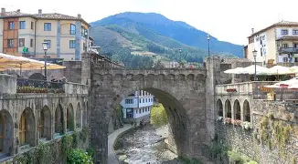
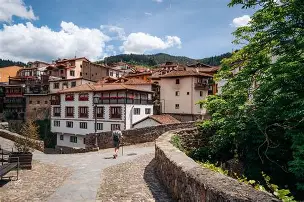
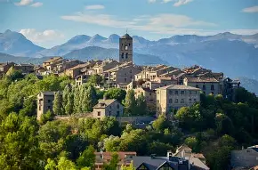
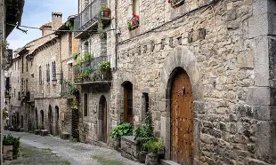

En pleno valle de Liébana, rodeado por los imponentes Picos de Europa, Potes combina historia, naturaleza y tradición. Sus calles empedradas, puentes medievales y casas con soportales nos trasladan a otra época, mientras los sabores locales y los paisajes de montaña hacen que cada visita sea una experiencia auténtica. Potes es el ejemplo perfecto de los pueblos de interior de España, donde cultura y naturaleza se encuentran para crear un lugar inolvidable.


En la comarca del Sobrarbe, rodeado de montañas y el río Cinca, Aínsa conserva un casco antiguo que parece detenido en el tiempo. Su plaza mayor, sus calles empedradas y su imponente castillo medieval cuentan historias de siglos pasados, mientras los paisajes pirenaicos ofrecen aventuras y tranquilidad a partes iguales. Aínsa es un ejemplo del patrimonio histórico y natural que hacen de los pueblos del interior de España destinos únicos para descubrir.


Situada en la provincia de Málaga, en plena Serranía de Ronda, este pueblo andaluz deslumbra con su impresionante puente que une los barrios separados por un profundo desfiladero. Sus calles estrechas, plazas con historia y casas blancas encaramadas al borde del Tajo invitan a perderse en un viaje entre tradición, cultura y paisajes espectaculares. Ronda combina historia, arquitectura y naturaleza de manera única, mostrando el alma vibrante de los pueblos del sur de España.